На улице Розы Люксембург продолжается ремонт домов, пострадавших от взрыва.…
Сейчас на объектах работают четыре бригады, сообщил мэр Александр Болдакин после встречи с жителями. В доме № 52 уже установили 36 оконных рам.…
НовостьПо данным источника
Она разгрузит сети на Локомотивной и избавит район от изливов стоков. В конце октября начнут ставить оборудование, в конце ноября подключат электричество, запуск планируют в первой половине декабря, сообщает мэрия.…
Сейчас на объектах работают четыре бригады, сообщил мэр Александр Болдакин после встречи с жителями. В доме № 52 уже установили 36 оконных рам.…
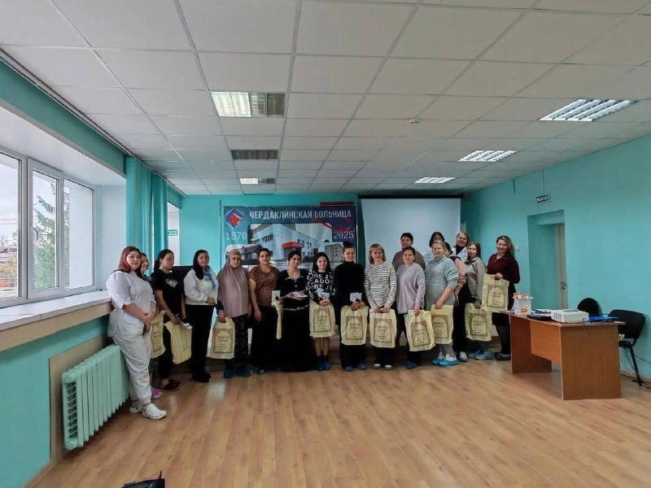
Женщины осваивали дыхательные техники для разных периодов родов и методы саморегуляции.…
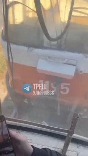
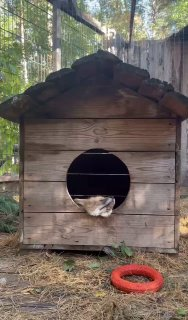
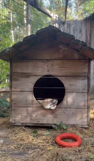
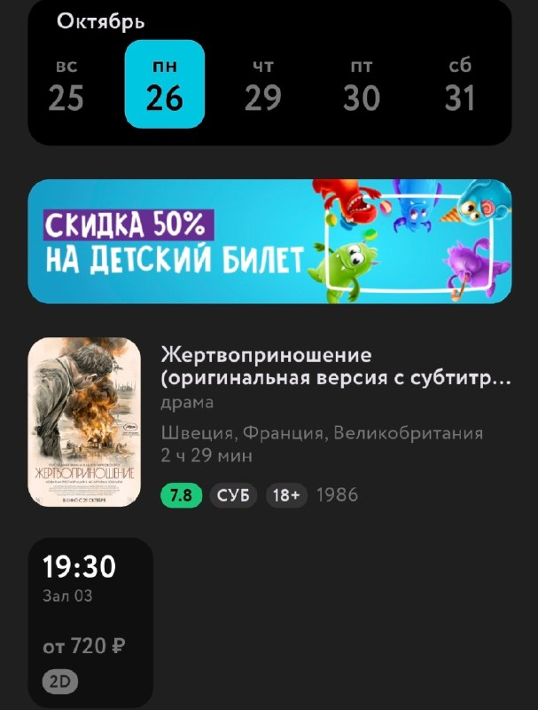
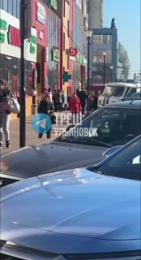
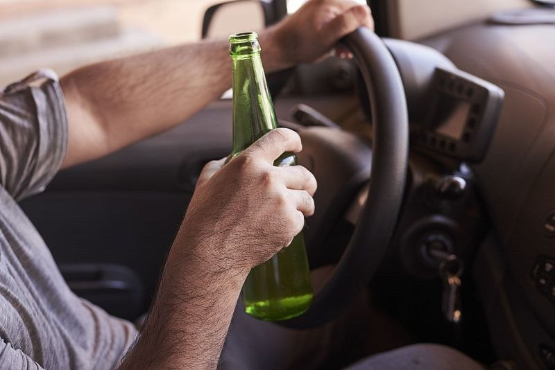
Госавтоинспекция вместе с общественниками в усиленном режиме выявляет пьяных за рулём.…
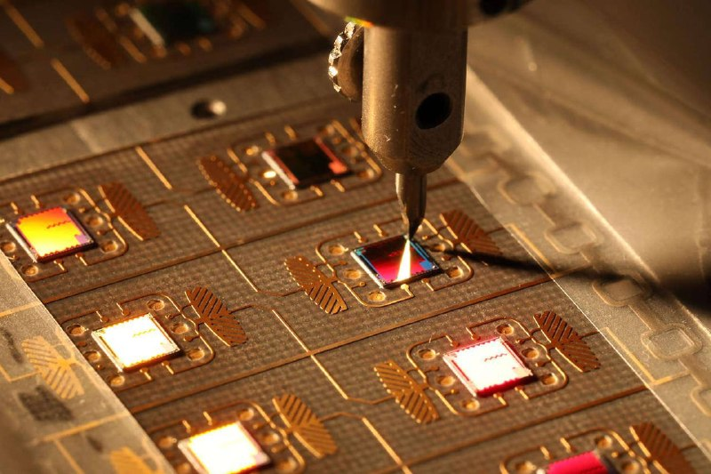
От масштабного проекта по производству микросхем до карбоновых протезов и ИИ, спасающего жизни.…

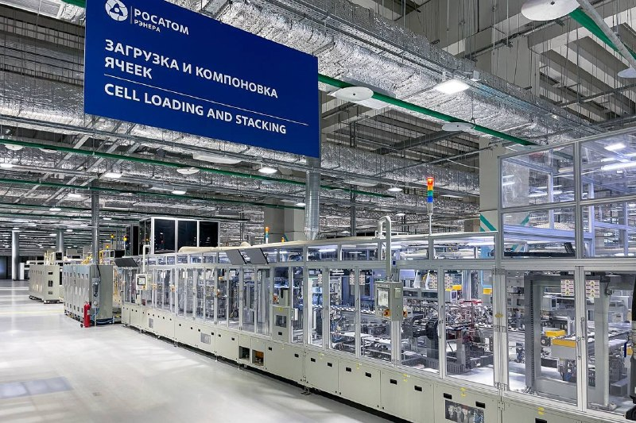
В Москве запущен первый в стране кластер электробатарей, а Росатом ввёл в строй гигафабрику.…
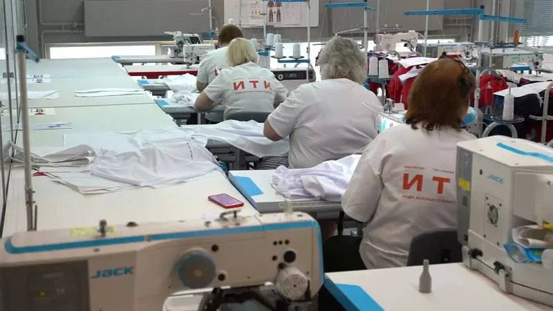
🔹 Обзор: в сентябре 2026 года в России было открыто 26 новых производств В сентябре 2026 года в России открыто 26 новых предприятий и цехов с инвестициями более 100 млн рублей, из них 5 крупных с инвестициями более 1 млрд рублей.…
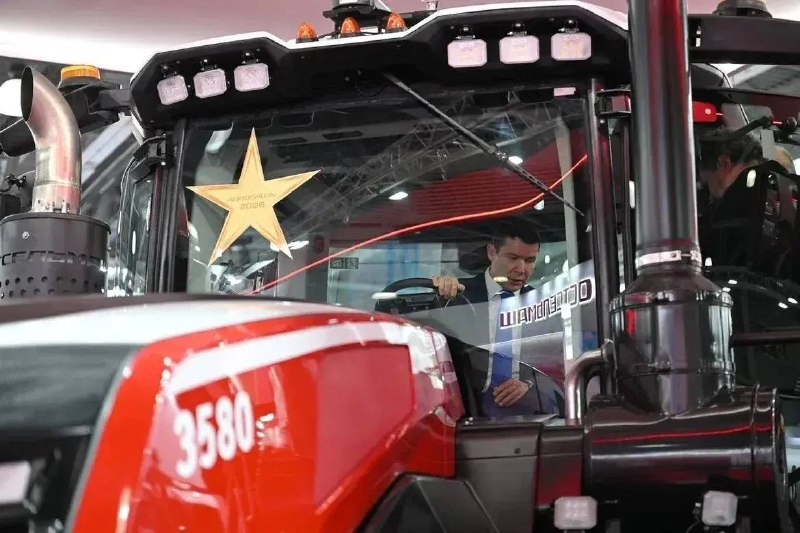
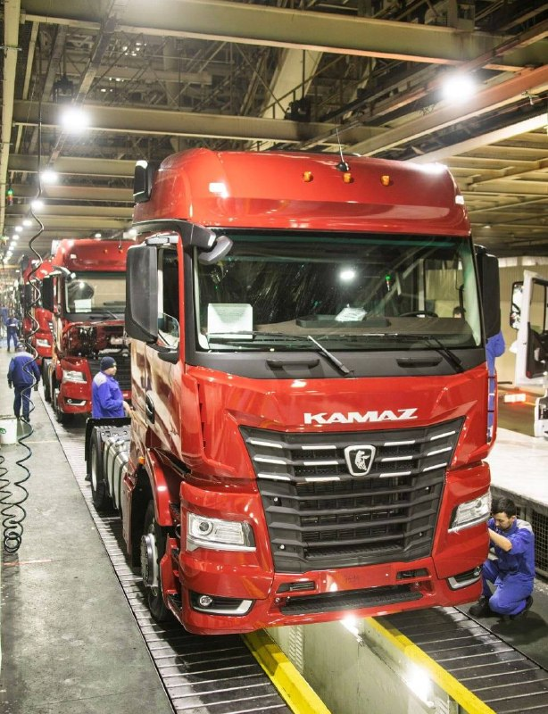
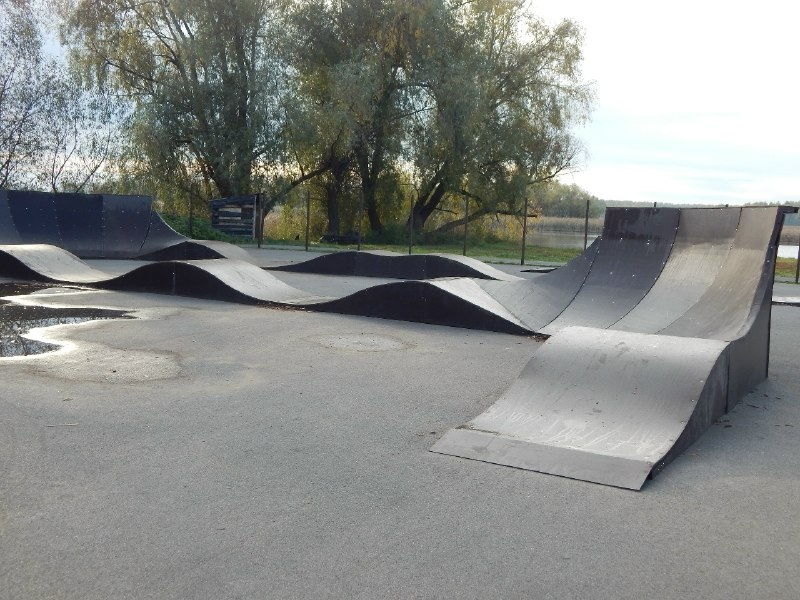
Для города это новое направление: подобных объектов раньше не было. Планируем в следующем году установить аналогичную конструкцию в парке «Западный».
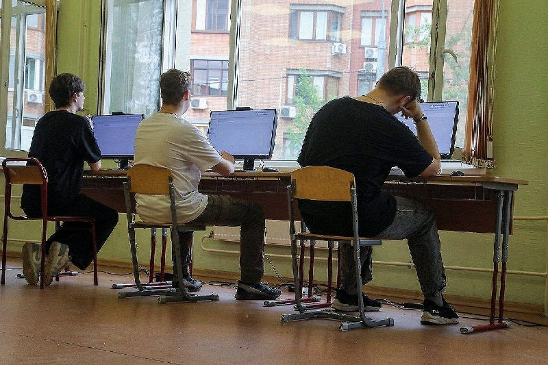
Об этом сообщил министр просвещения Сергей Кравцов. Надо 👍 / 👎 ?…

В июне женщина познакомилась в мессенджере с мужчиной по имени «Давид», который пообещал приехать в город к родителям и рассказал о высоких доходах от инвестиций.…
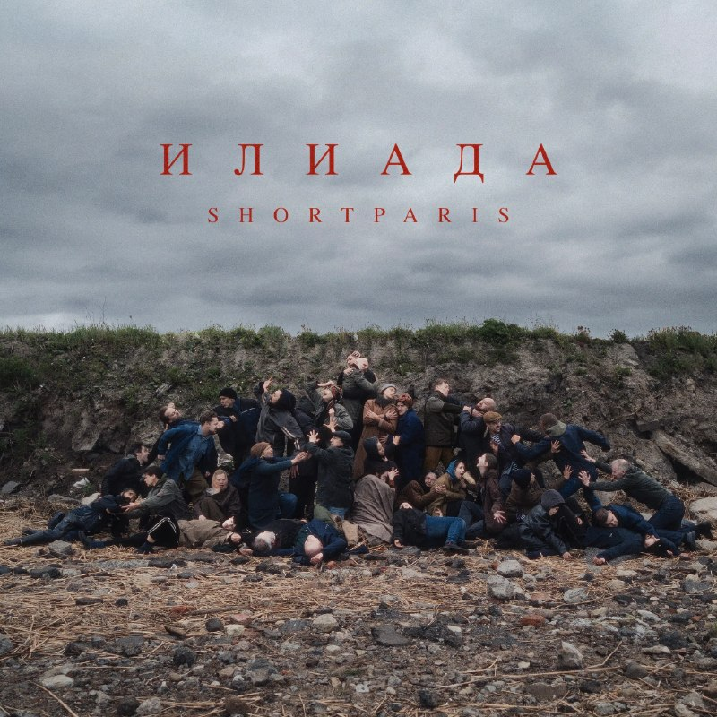
Для фронтмена Николая Комягина пластинка стала посмертной.…
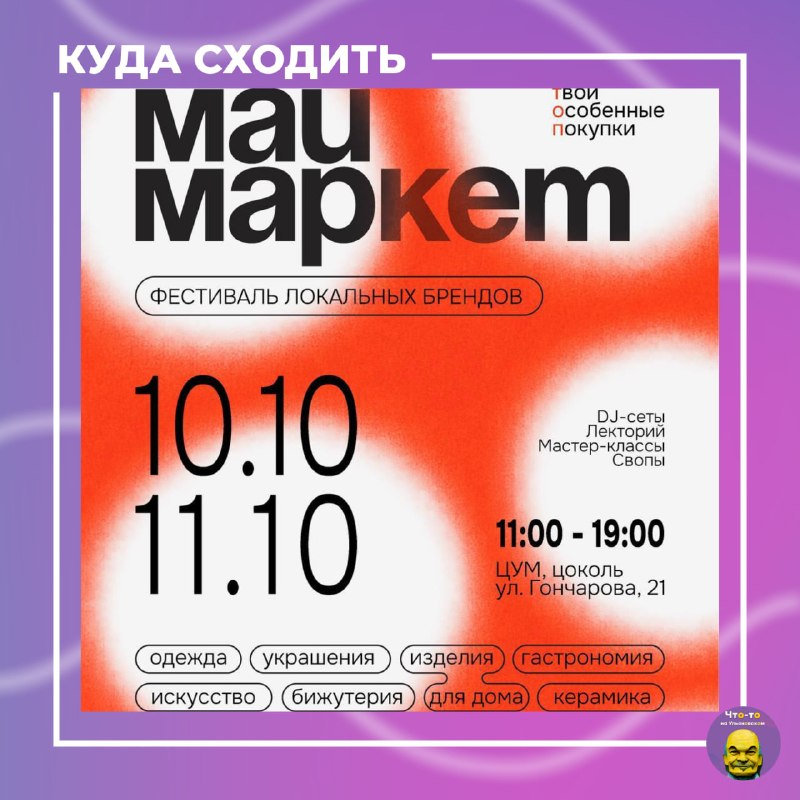
Более 80 участников из разных уголков страны с подарками ручной работы: керамика, одежда, аксессуары, косметика, гастрономия, искусство, изделия для дома.…

47-летняя жительница Железнодорожного района потеряла 580 тысяч рублей, поверив мошенникам.…
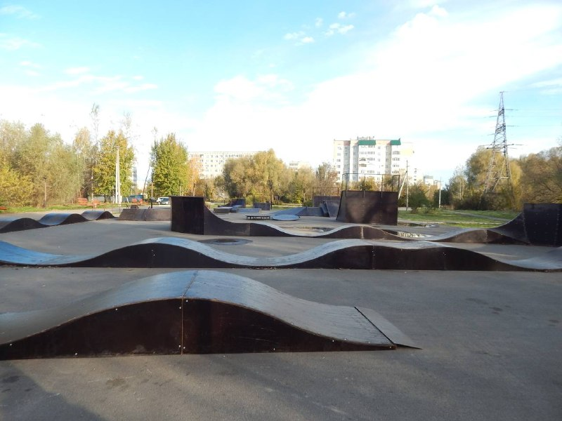
Сергей Сандрюков заявил о планах в следующем году установить аналогичную конструкцию в парке «Западный».

Планируется, что квота для приёма на работу граждан, завершивших военную службу, работодателям со среднесписочной численностью работников более 100 человек составит в размере одного процента от среднесписочной численности работников, но не менее одного рабочего места.…
В соревнованиях участвуют 58 человек, стоимость входа — 4 000 рублей. Гонки проведут в трёх классах: «Железо», «Бронза» и «Электро».…
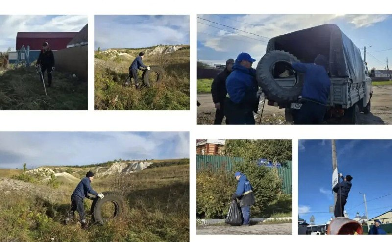
Открытие соревнований – в 10:30, первая линия стартует в 11:00. На данный момент на гонку зарегистрировались 58 человек.…
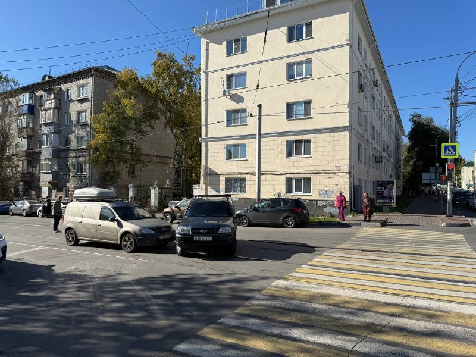
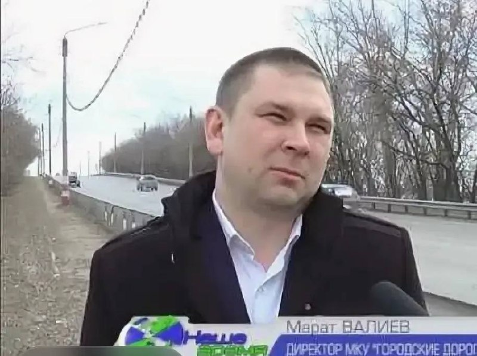
Говорят, вчера здесь изъяли всю оргтехнику и финансовые документы, увезли на допросы в Ульяновск руководящий состав и бухгалтера учреждения.…

Сотрудники Ульяновского ЛО МВД на транспорте участвуют во втором этапе федеральной операции «Нелегал-2026», сообщает линейный отдел.…
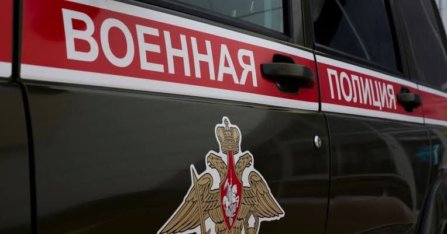
— Проведение дознания по делам о преступлениях военнослужащих, добровольцев и гражданского персонала.…
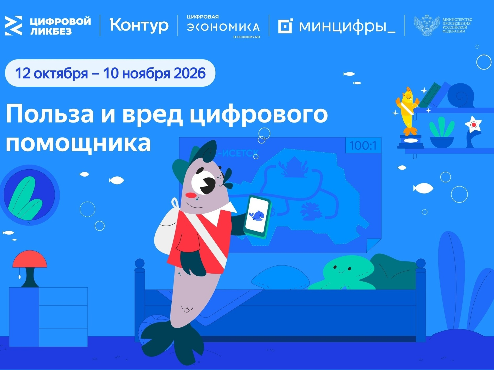
Материалы Всероссийского просветительского проекта «Цифровой ликбез» будут доступны для всех желающих до 10 ноября на официальном сайте цифровойликбез.рф.…
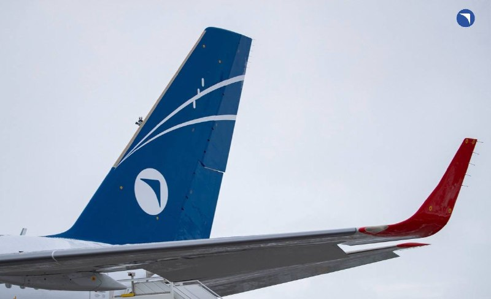
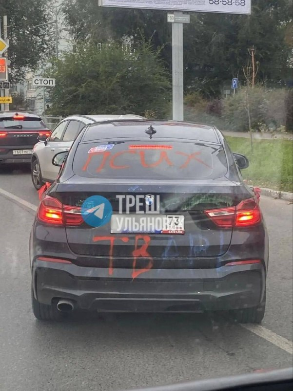
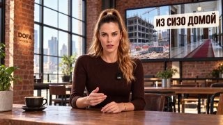
Дело завязано на коррупционную деятельность замдиректора МКУ «Тобольскстройзаказчик» Олега Макешина, которому Олейников платил за беспрепятственную приемку брака.……
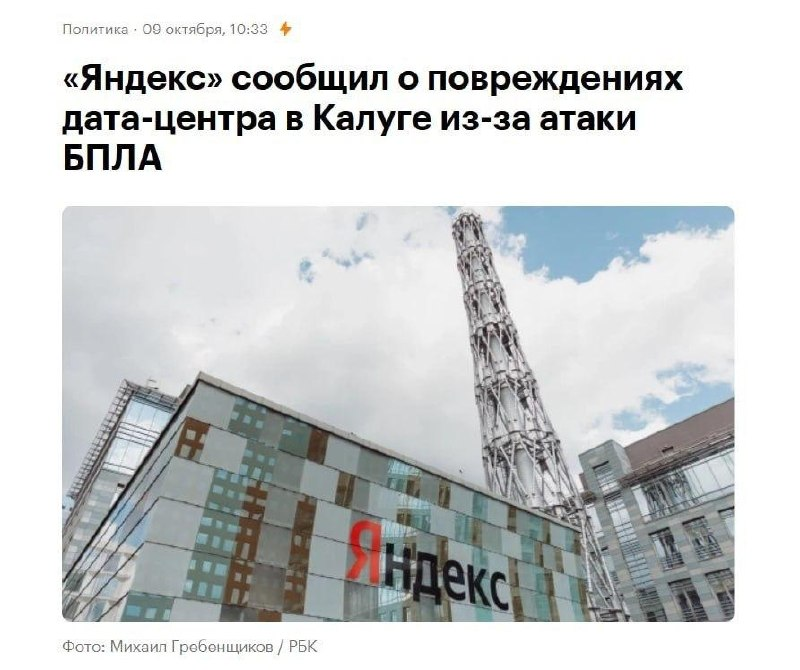
Накануне беспилотники атаковали дата-центр компании в Рязанской области, после чего в России произошли масштабные сбои интернет-сервисов.…
Ничего по этому фильтру в ленте нет — показать все материалы.
Возник 24.09, пик 24.09 — сюжет держали 14 источников. Полная дуга — в недельнике.